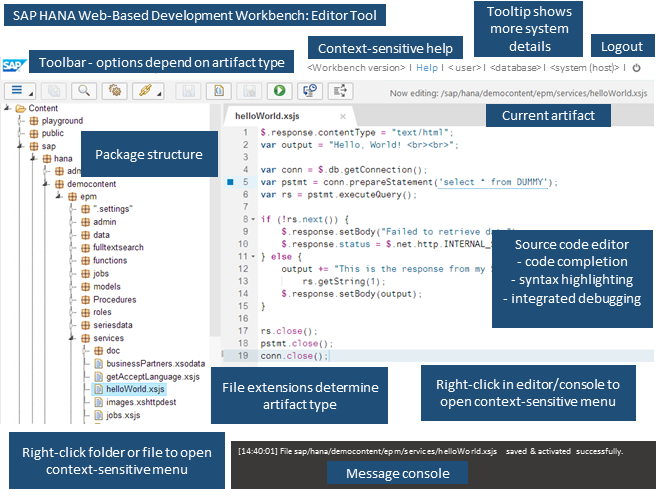

SAP HANA Web-based Development Workbench includes an all-purpose editor tool that enables you to maintain and run design-time objects in the SAP HANA Repository.
The Editor component of the SAP HANA Web-based Development Workbench provides a browser-based environment for developing SAP HANA Extended Services (SAP HANA XS) repository artifacts. To use the Editor you must have the privileges granted by the role sap.hana.ide.roles::EditorDeveloper or the parent role sap.hana.ide.roles::Developer.
The figure below shows the main features of the Editor tool:

In addition to the basic functions of creating, editing, and executing repository objects, the Editor provides additional features, which are described briefly in the table below.
| Feature | Description |
|---|---|
| Multi-file drop zone | You can upload multiple files at once to a repository package by dragging and dropping the selected files (from your desktop, for example) into the area marked as the multi-file drop zone. The multi-file drop zone is visible when a package is selected in the package tree. |
| Multiple editors | You can open multiple editor tabs or you can open an editor as its own browser tab. |
| File history | The tabs (files) you opened during your last session will reopen when you log in to a new session. |
| File shortcuts | You can use shortcuts to open files. |
| Version history | You can view a list of file versions, compare one version of a file with another one, and revert a file to a previous version. |
| Templates | You can use templates for standard SAP HANA XS applications, including SAPUI5 applications and SAP Fiori applications. You can also use code snippet templates for individual files, such as .hdbtable, .hdbschema, .xsjs, .xsodata, and .hdbprocedure files. |
| Automatic syntax highlighting and code completion | Syntax highlighting of source code, code completion options, and checks for syntax errors are available for most artifact types. |
| ESLint code checks | The JavaScript editor includes the ESLint validation tool, which highlights any code that does not conform to ESLint standards. You can configure or disable the check in the editor settings. |
| Inactive save and object execution | You can save and execute an inactive version of your artifact before activating it to make it available for others to use. You can enable this functionality in the editor settings. |
| Direct testing | You can test html pages and XSJS
services directly from the editor in the browser. The
application preview allows you to test HTML pages with various
form factors. Tip The direct-testing feature adds a
timestamp as a URL parameter to bypass caching. However,
internal Ajax calls in your application might be cached by
the browser. Try clearing the browser-specific cache if you
do not immediately see your changes reflected on
execution.
|
| Debugging | You can use the integrated debugging features to debug your application. Note that to be able to use the debugging features, you need to be assigned the sap.hana.xs.debugger::Debugger role. |
| Immediate feedback | This option lets you inspect the execution of an xsjs function, including execution times for SQL queries. |
| Function flow | A code flow visualizer that shows you which JavaScript functions are called in a file and allows you to navigate between them. |
| JSDoc | You can generate JSDoc documentation for XSJS, XSJSLIB, and JS files. |